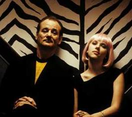
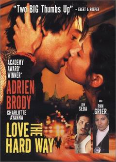

Archives : 2004-01
《Lost in Translation》 @ Jan 29, 2004
晚饭前看完这张盗版碟，最后部分人物对白和画面脱节......也许最细腻的部分没完全体会明白。我以为影片到最后导演一定会让他们做爱，象大部分邂逅的两性关系那样，结果没有。当看到男女主人公最后在东京街头以吻别结束影片时，我必须强调一下那个吻，很淡很轻，很犹豫很渴望，同时又那么的压抑他们内心的感受，让人眼眶微微有些湿润。

索菲亚-科波拉(Sofia Coppola)执导的《迷失东京》 一片全部在日本实地拍摄，这部片子只花了短短27天拍完，一推出却立刻获得全世界多项影评人奖与金球奖提名。影片讲述东京寂寞的夜空下，两个失眠的美国人在酒吧里相遇了。
鲍勃·哈里斯，逐渐过气的好莱坞影星，悲哀而无力地看着风华一点点逝去。爱情从婚姻中黯然退场，所有生存的激情消失殆尽。生命对他不再有任何意义，仿佛只剩一具麻木的躯壳在茫然行走。哈里斯来到东京拍摄一则威士忌广告，他对这份工作毫无兴趣。回到旅馆，只是一人枯坐，他并不是疲倦，而是彻底厌倦——不仅是对现在的生活，而是对生命本身。
夏洛特，年轻美丽的大学毕业生，正当青春妙龄。她与一位摄影师结婚，陪丈夫来到东京，却发现丈夫完全沉浸在工作中，几乎忽略了她的存在。夏洛特只好一个人百无聊赖地在城市里闲逛，漫无目的地在街上游荡。她突然感到自己对这种状态是多么烦恼，而对丈夫又是多么不了解。
一对同样落寞而沮丧的男女相伴潜入这座城市中，最终在生活隐藏的无限可能中重新找到了信念…… 那种身处异乡、难以与周围的环境取得有效沟通的境遇将人的永恒孤独具像化了，与周遭现实仿佛脱节般的疏远感突显出一股不知所措的迷茫。导演索菲娅精确地抓住了当代人灵魂深处的失落，轻轻触动每个人心灵中最柔软脆弱的部分，牵引出所有被隐藏的孤寂与伤感……人生总会经历那样的迷失时分，也会有男女主人公那般美妙的邂逅，都不能永恒，却会对生命产生不可磨灭的影响。
LOVE THE HARD WAY @ Jan 27, 2004
傍晚在家看了这部《LOVE THE HARD WAY》 的DVD，有话要说。
以前印象中还看过一部美国片《ALL THE REAL GIRLS》，中文片名叫《我爱你》，大致也是这类故事情节。在我们周围有无数因受到感情刺激而堕落的都市女人（木子美当属典型范例，但不知她是否接受“堕落女人”这个形容词？先表示抱歉。其实我很理解她所受的那种痛彻骨髓、又一时无法解脱的伤害.....），以及象先前的杰克这样只为了上女人而极尽所能花言巧语的男人们。爱情就是化简为繁，相信一见钟情的人，总是为这第一眼，清除许多原本就应存在的依附。感情这种说不明道不清的人体催化剂，全让彼此面目全非，引发一场无声的爆炸。解决爱情比解决性欲要困难的多……越来越多的都市女性关心的不是在亲密关系里受伤，也不再耿耿于怀男人的来去匆匆，而是更加有冲击力的挑战男人的角色，根本怀疑男人还有多少承受桃花的能力。男人们该多学学说甜言蜜语，甜言蜜语是杀死女人的毒药。这方法对无知的女人有着致命的效果。
有一则寓言，说乌鸦为了喝到瓶子里的水，往瓶子里填石头。有人把水比做女人，把男人比做乌鸦。当一个男人还是一只乌鸦的时候，他遇见了一瓶水，并且一见钟情，他用上了各种各样的石头，终于喝到了瓶子里的水，最终才蜕变成一个男人。水代表女人，而水不断浑浊的过程也代表了女人献身的精神。
爱情让人成长，爱情不过是一个人的独角戏以及一个人的幻想，与他人无关。
***********************************

《LOVE THE HARD WAY》是德国独立导演彼得·泽尔根据中国当代作家王朔的小说《一半是火焰一半是海水》所改编的作品，剧本前后共修改了十四版，并且将整个故事置身于纽约这样一个大城市里，但原著中对当代人精神层面的揭露和分析则在影片中得到了放大。靠敲诈为生的杰克（Adrien Brody饰）遇上美丽的大学生克莱尔（Charlotte Ayanna饰）。开始，杰克只为和克莱尔上床，大肆表现，克莱尔被杰克吸引，深深爱上了他。杰克上过克莱尔后一直没再联系克莱尔，于是，克莱尔去找杰克，杰克也轻松接受克莱尔的爱情和献身，同时仍然和其他女人发生性关系，被克莱尔撞见。杰克对克莱尔说：“人都这样，你不过是沉浸在你自己吹起的爱情泡沫里，我对你好不过是想上你，仅此而已。”
克莱尔泪流满面痛苦地走在街头，一个路过的男人问克莱尔：“出台吗？50美圆如何？”
克莱尔神情恍惚地回答：“好啊。”
男人又问：“不带套多少钱？”
“同样价格。”克莱尔答道。
受到刺激的克莱尔在那之后频繁卖淫，任何体型年龄的男人她都和他们上床。杰克和他的朋友装成警察到酒店执行公务，以此敲诈那些外国嫖客们的财物。有一次居然遇见克莱尔正骑在一个身材肥大衰老的老头身上云雨，杰克惊呆了，上去揍了那个老家伙。后来，杰克、他的搭档以及克莱尔联合起来，由克莱尔装扮成高级妓女勾引那些外国男人，然后杰克和他的朋友以同样的方式去敲诈......同时，克莱尔还在不断卖淫，每每杰克尾随其后，内心异常痛苦。这情形折磨着杰克，生不如死。
杰克入狱，没有等到杰克回来的克莱尔在杰克的寓所割腕自杀,她看着血一点点从手腕里流干...两年后杰克因病出狱，去寻找被救活过来的克莱尔，那时的克莱尔已经在窗明几净的实验室里工作，恢复了过去美丽的容颜，而她上大学时的梦想是获诺贝尔奖。
杰克和克莱尔见面了，克莱尔说：“我当时那样不过是想走进黑暗中看看究竟是怎么一回事。”
“你使我走出黑暗，现在我知道了。”杰克说。
*官方网站 *电影预告（6M） *德国导演彼得泽尔拍王朔笔下流氓
******************************************
写这篇文字的过程中，我已不知道听了多少遍这首钢琴曲I HAVE ME TO LOVE YOU。心情异常沮丧。
这时有人说：“你太过于理想化。”
答：“那我会不会死在理想下？”
对方说：“唯一的希望就是凤凰涅磐、浴火重生。”
答：“现在也快了。”
又问：“你脚下的火是不是烧得够旺，我怀疑？”
答曰：“生不如死算不算旺？”
那人回了句很老套且通俗流行的话：“姑娘你的路还长着呢。”
没默契，最后就回答了这么一句毫无诗意和意境的话，我决定不再回应。以结束无法停止的钢琴曲和这篇文字。
The Sorrow @ Jan 16, 2004
I am fighting against my chimera;and I am still staying in my own figure.
People misht see me but they never understand me.I believe in my heart:I know I exist,but I could not know what identity I really own.

2003年度大公司的年会在热热闹闹的抽奖和文艺节目中结束了，我又做了一次SM主持人连我自己都看腻了的面孔。外面下了很冷的雨，好象经历了一次疲惫的旅行，回到家中坐在电脑前，大脑里一片空白。
29年零5个月不过是逐渐放弃原则，接受多元化现状的一个过程？凭什么，上帝在改造人类之前就不能和我们商量一下？让人压根不了解真正的自己，我无法憎恨。妈的，因为这世界上还有廉价货出售，你总不能把自己也折价卖了吧？！果真这样，沦落两个字最适合自己用。
我知道那种憎恨需要一次生命的轮回才能消散。
问题 @ Jan 15, 2004
在我去参加那个没劲的年终总结会之前，在这里提出一些问题：
你最大的不幸？
你最愿生活的地方？
你最大的幸福？
你最喜欢的能力？
你最喜欢的职业？
你最能原谅的错误？
你最喜欢的状态？
你最重要的人生哲学？
避孕、无性婚姻 @ Jan 10, 2004
下雨了，有点冷。明天早晨要是户外积了雪，我会背上三脚架和相机冲出家门去南京东郊折腾一翻的。最近打算买架单反的光学相机，倾向莱卡品牌，受了HANK拍的那些照片的刺激。
 长这么大并不知道有什么具体的措施避孕，今天好朋友神秘兮兮地打电话来咨询，开始问：“你周围是否有人，接电话是否方便？”我以为她要向我讲述什么国家机密，马上说：“没事没事，不会有人偷听的。”我该怎么给她写E-MAIL呢？这里有医生吗？听说吃避孕药对身体不好。上网查了，也就是吃药上环之类的建议，为什么不让男人生孩子？男人个个身强力壮，老天应该重新安排一下生理构造。女人的健康意味着一切！
长这么大并不知道有什么具体的措施避孕，今天好朋友神秘兮兮地打电话来咨询，开始问：“你周围是否有人，接电话是否方便？”我以为她要向我讲述什么国家机密，马上说：“没事没事，不会有人偷听的。”我该怎么给她写E-MAIL呢？这里有医生吗？听说吃避孕药对身体不好。上网查了，也就是吃药上环之类的建议，为什么不让男人生孩子？男人个个身强力壮，老天应该重新安排一下生理构造。女人的健康意味着一切！
无意间在西祠看到有关无性婚姻的文章，甚是好奇，在GOOGLE上搜索了来看。
一些社会学家将每月低于一次性生活的婚姻界定为“无性婚姻”，对于中国人来说，这个指标可能过于苛刻。人民大学性社会学研究所的潘绥铭教授带领36名研究员，历时一年，进行了一次全国范围的随机抽样调查，在全国城乡60个地方的3824位20岁到64岁男女的性生活状况进行了了解。这份调查最耸人听闻之处是提出了这样的情况：在他们调查的已婚或同居的男女中，每个月连一次性生活都不到的人超过了四分之一（28．7％）。在最近的一年里连一次性生活都没有的则占6．2％。而据美国最新的统计，20多岁的青年夫妻是平均每周三四次；30岁以上的是每周大约两次；50岁以后才会降为每周一次。
中国存在“无性婚姻”主要分布在两个年龄段：28～38岁、50岁以上。性是增进夫妻感情的润滑剂，“无性婚姻”肯定会影响夫妻感情，加剧夫妻间的矛盾，对婚姻满意度会下降，很容易导致家庭破裂，进而影响到社会稳定。此外，家庭气氛紧张，会给孩子带来终生的负面影响。
现代人面对 “无性婚姻”的围困，面临三条道路：
一、修补：就是改变夫妻间的无性状态。坦白地说，婚姻本身对性是没有影响的，倒是夫妻关系的好坏才会影响到性。结婚之后夫妻关系的进一步深化才能使性有生命力，婚姻不该是爱情生活的终点而是加油站。
二、解体：解放自己也解放对方。人的一生很短，可以享受性爱的时光更短，对于女人来说，尤其短，为什么非要让一场没有生命的婚姻拖住呢！我和许多处于无性婚姻状态的女性朋友谈过，即使已经承受了很长的时，即使可以享受的时光还剩下一年，仍然可以去争取，这才是对待生命的积极态度。
三、维持：这是我最不赞同的生活态度。我倡导为自己而婚姻，为自己而活。不管是男人还是女人，不管在婚姻里面还是在婚姻外面，能够为自己而活，为自己而婚姻才符合生命的本真。但因为道德影响、文化影响社会影响等等许多影响在左右着婚姻的主权，太多婚姻都习惯于社会责任而放弃自我权利，其实我以为这是一种悲哀。
倡导无性婚姻的人是以这种假时尚掩盖他们的真无奈，他们要么无能要么无爱。性爱是人类最重要和最深刻的交流方式，它是人类自身生产的前因，它也是人获得终极美感的方式。所以，当代真正时尚的婚姻，应该是以性为本，以性为美。—男人通过性爱表达爱
5周年纪念 @ Jan 06, 2004
5年前的今天是DAVID向公司辞职的日子，那时他不满28岁。从那一天起我在公司里开始经历心理上的巨大锤炼。这经验于我是宝贵的。